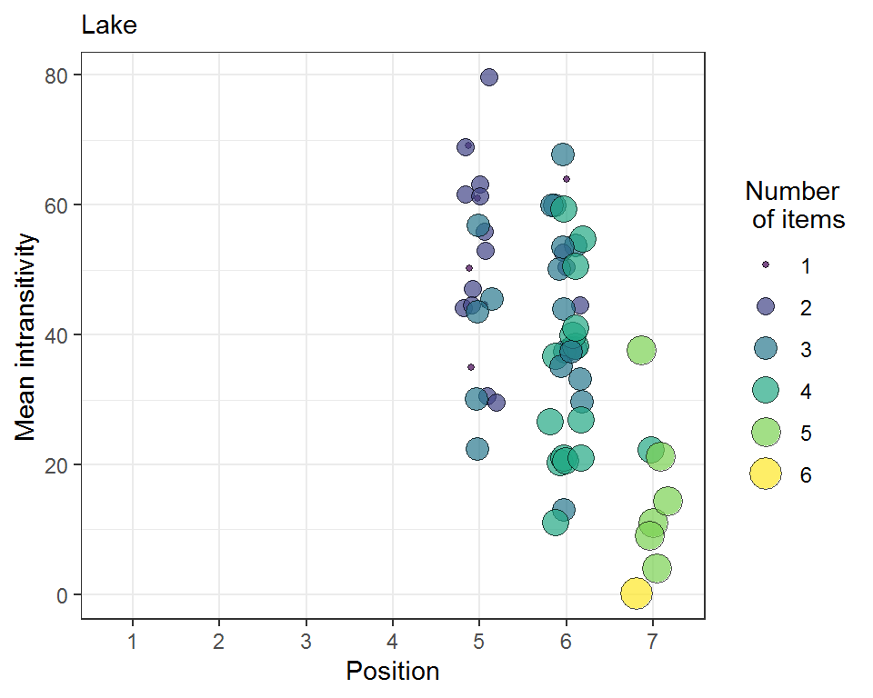

…offers various functions for the position-assessment of a commodity obtained from a preference test experiment. The analysis of binary data and continuous data is possible. However, in the case of the latter ties will be introduced in case of equal test results. The package offers solutions (mainly by using randomizations) to conquer this problem. For each data set, the intransitivity values are calculated as well. This offers some sort of quality assessment for the analyzed data. A user can rank unknown commodities using different combinations of the remaining items in his test list. This vignette will give a basic understanding of what can be done with the package. We’ll make use of the three internalized data sets for theses examples.
The response variable (RV) is binary. The items in the commodity list are (“Cat”, “Crow”, “Doctor”, “Frustrated”, “Lake”, “War”, “Fire”). For this purpose, the subset “LargeValanceRange” was chosen to calculate the worth plot of the items as well as the total intransitivity value of the data set (always between pairs of three).
library(tiefightR) raw <- tiefightR::human humantest <- tie_worth(xdata = raw, SV = "side_img1", # specify the column names for the data RF = "img1", # specify! CF = "img2", # specify! id = "ID", # specify! RV = "pref_img1", # specify! showplot = TRUE, ymax = 0.5, intrans = TRUE, # change to false so save some calculation time compstudy = "LargeValanceRange", default = "War", ordn = c("Cat", "Crow", "Doctor", "Frustrated", "Lake", "War", "Fire"))
humantest$worth #> worth #> Cat 0.28547443 #> Crow 0.14625147 #> Doctor 0.05492642 #> Frustrated 0.03669308 #> Lake 0.33990722 #> War 0.02220140 #> Fire 0.11454598 #> attr(,"class") #> [1] "wmat" "matrix" humantest$intrans #> [1] 27
Let’s say we want to test the position of “Lake”. Then we’ll have to add the variable r1 (this one gets tested) and specify in r2 to which items it shall be tested. In this example, we test against r2=“Cat”. This vector can be expanded with any item from the full list. The tie_worth function will take any combination of “Lake” vs “Cat” and randomizes the outcome variable (pref_img1) for the remaining combinations. This way the position of “Lake” will test against random positing allowing to assess its position context. Therefore, repeating this function will change the results a bit every time. To get “fair” estimates of the worth values, these randomizations should be repeated (many times). The number of randomizations (R) depends on the data set. However, in the “tiefightR Vignette” a minimum of 50 randomizations seems reasonable for the mouse data. You’ll notice, that the worth values are different compared to use case 1. The function arguments (SV…RV) are the default settings and have not to be repeated here again.
human_test2 <- tie_worth(xdata = raw, showplot = FALSE, compstudy = "LargeValanceRange", default = "War", ordn = c("Cat", "Crow", "Doctor", "Frustrated", "Lake", "War", "Fire"), r1 = "Lake", # change this r2 = "Cat") # change this / to multiple combis human_test2$worth #> worth #> Cat 0.31973137 #> Crow 0.22879579 #> Doctor 0.09921308 #> Frustrated 0.05846778 #> Lake 0.09921308 #> War 0.03708570 #> Fire 0.15749319 #> attr(,"class") #> [1] "wmat" "matrix"
The problem of position evaluation becomes more difficult when data are non-binary. This will automatically introduce ties for items with the same continuous outcome. To work with these data, they’ll have to be binarized (tie_binarize)first and then analyzed with the tie_worth function. The arguments r1 and r2 can be used for testing individual items as shown in use case 2. Note, that the argument “compstudy” has changed as well since, in these data, the names for the subgroups are different. The variables (SV, RF, CF, id, and RV) have changed as well. By setting the setseed argument to TRUE the data are binarized with a fixed seeding. This will be the “original” data set for reproducible results. There is also a new argument (prefLimit) that will define the threshold for (continuous) ties being 1 or 0. It represents the randomization Likelihood for the random function. The default setting is 50%.
# Import raw data (exmpl: mouse data) raw_mouse <- tiefightR::mouse # binarize data (w/ constant seeding) - study/test_no 1 # NOTE: the binarized set is calculated with a constant seeding. # You can change this w/ setseed = FALSE! bin_mouse <- tie_binarize(xdata = raw_mouse, SV = "side", RF = "fluidType", CF = "combinationWith", id = "animalID", RV = "numOF_visits_with_Licks", compiled_studies = 1, setseed = TRUE, # requirement for a defined set prefLimit = 50) # calculate worth values w/ the binarized data mouse1 <- tie_worth(xdata = bin_mouse, SV = "side_img1", RF = "img1", CF = "img2", id = "ID", RV = "pref_img1", showplot = TRUE, ymin = 0.10, ymax = 0.30, intrans = TRUE, compstudy = 1, default = "HCl", ordn = c("m10MSac", "m5MSac", "HCl", "NaCl", "water"), r1 = NULL, r2 = NULL)
mouse1$worth #> worth #> m10MSac 0.2264456 #> m5MSac 0.2436101 #> HCl 0.1309757 #> NaCl 0.1885193 #> water 0.2104492 #> attr(,"class") #> [1] "wmat" "matrix" mouse1$intrans #> [1] 35
Although the function from the prior use cases allows individual testing, the tiefightR package offers a distinct function for testing variable combinations. The resulting table yields the mean intransitivity value plus the 95% confidence interval. This function can be used to test a data set for the number of randomizations needed to adjust for potential ties.
# Observe the position and mean intransitivity after R randomizations raw <- tiefightR::human ord <- c("Cat", "Crow", "Doctor", "Frustrated", "Lake", "War", "Fire") mytest <- tie_test(xdata = raw, R = 2, # adjust intrans = TRUE, compstudy = "LagreValenceRange_SpringSchool", default = "War", ord = ord, seed = TRUE, testme = "Lake", # Change against = "Cat") # Change items and watch intrans move mytest #> against worth pos intrans Ipct n I_sd upr lwr #> Lake Cat 0.129 5 65 2.79 2331 0 65 65
The above-shown use cases are good for single tests when the combination of items is evident. However, in reality, the order of items is unclear. Simulation is a good start for ranking an item without knowing too much about the remaining combinations and transitivity. The tie_sim function will test an item against all possible combinations (as shown above) but will, additionally, randomize the results R-times. The resulting mean worth values and mean intransitivity values indicate the quality of the item’s position.
Standard R will only work on a single thread. Since simulations are computationally intense, the tie_sim function employs parallel computation. You should only perform these calculations if you’re working on a machine with multiple cores (CPUs). The following function will help you determine the number of cores on your machine.
### Check the number of available CPU cores on your machine. ### Use k-2 later in the simulation or things could get ugly... ### Don't do this analysis on a single core machine. library(tiefightR) k <- tie_cores() k #> [1] 8
Okay, so now we know that we have 8 Cores on our machine (yours might be different!). We will use 6 in the simulation (just to be sure). This example uses only R=2 randomizations to keep things simple. You should increase this R-value appropriately. Again, we test the item “Lake” against all the rest of (64-1) possible combinations in the item list (ord).
The simulation result will be analyzed with the tie_simrep function. This will output a Bubbleplot with the calculated positions of the test variable and the achieved worth values. The bubble sizes correspond to the calculated mean intransitivities. Also, the color codes for the number of variables from the item list that were tested in the respective simulation step. There is also a frequency output table (Ftable) showing the number of times the test variables were positioned in a specific position. If you want to simulate non-binary data, you’ll have to use the tie_binarize function output as input data in the simulation. Remember: the set uses a randomly fixed set of ties (if present)!
library(tiefightR) # load some data for the simulation raw <- tiefightR::human ord <- c("Cat", "Crow", "Doctor", "Frustrated", "Lake", "War", "Fire") # Let's simulate set.seed(123) testme <- "Lake" sim_humans <- tie_sim(xdata = raw, R = 2, # No. of randomizations (here=3 to keep things easy) cpus = 6, # enter the no- of CPUs SV = "side_img1", RF = "img1", CF = "img2", id = "ID", RV = "pref_img1", intrans = TRUE, compstudy = "LagreValenceRange_SpringSchool", default = "War", ord = ord, v1 = testme) # Analyse the simulation result with the following function tie_simrep(res = sim_humans, v1 = testme)

#>
#> 5 6 7
#> 20 36 7